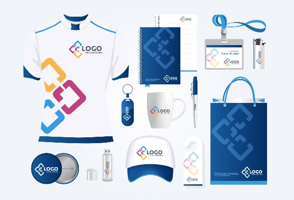

Proyecto IR-G1-11 Cinética
Especificación de Requisitos del Sistema
Versión 1.0
Fecha 20/10/2021
Preparado para:
Preparado por:
Cinética es una clínica privada de fisioterapia, rehabilitación y readaptación de reciente creación situada en Tomares.
De forma general, debe indicar brevemente a qué sistemas de información de la organización cliente afecta.
Si se considera oportuno, también puede indicarse a qué sistemas de infromación NO afecta.
El sistema a desarrollar supondrá una mejoría frente al actual de cara a los trabajadores de la clínica, y una novedad de cara a sus clientes. Concretamente, afectará a los siguientes aspectos de la organización:
Gestión de las citas.
Gestión de la comunicación con los clientes, tanto al momento de pedir o cancelar citas, como a la hora de comentar tratamientos post-sesión.
Gestión de nóminas.
Esta sección (no incluída en la documentación oficial de Madeja) debe especificar las organizaciones y las personas participantes en el proyecto.
|
|
Fisioterapia y entrenamiento Tomares. Clínica Cinética. |
|---|---|
| Dirección |
PD |
| Comentarios |
|
|
IR-G1-11 |
|---|---|
| Dirección |
E.T.S. Ingeniería Informática |
| Comentarios |
Grupo de desarrollo. |
|
|
Rodríguez Vázquez, Manuel |
|---|---|
| Organización | Fisioterapia y entrenamiento Tomares. Clínica Cinética. |
| Rol | Cliente (es cliente) |
| Comentarios |
Ninguno |
|
|
Gómez Gómez, Gonzalo |
|---|---|
| Organización | IR-G1-11 |
| Rol | Analista (es desarrollador) |
| Comentarios |
Ninguno |
Esta sección debe describir, a modo de resumen y a alto nivel, los principales objetivos que se esperan alcanzar cuando el sistema a desarrollar esté en producción.
Los principales objetivos que se esperan alcanzar con el nuevo sistema son:
Mejora de la visibilidad de la empresa.
Incremento de las ventas al aumentarse la visibilidad.
Mejora del tiempo de respuesta a los pedidos de los clientes.
Mejora de la gestión del inventario.
Esta sección obligatoria debe contener información relativa al dominio del problema que permita comprender los conceptos básicos del mismo al lector del documento. Se divide en las secciones que se describen a continuación.
La información de esta sección puede que ya se encuentre total o parcialmente en documentación previa como el Pliego de Prescripciones Técnicas, la Oferta seleccionada o el Estudio de Viabilidad del Sistema, en cuyo caso se podrá reutilizar y se hará referencia a dichos documentos como fuente de la misma.
Al ser la empresa a la que va destinado el proyecto software una clínica de fisioterapia y rehabilitación, maneja cierta diversidad de términos médicos.
El departamento de marketing de la empresa a la que va destinado el proyecto de software se dedica fundamentalmente a optimizar los canales de distribución, realizar campañas de publicidad, cuidar la imagen corporativa de la empresa y lanzar promociones de nuevos productos. Dentro de estas actividades ...
Cliente: Persona o empresa a la que nuestra organización proporciona servicios. En el caso de personas particulares, los servicios habiutales suelen serr...
Diatermia: Técnica de tratamiento utilizada en rehabilitación. Emplea campos magnéticos o eléctricos de una frecuencia de 0.3 a 1 MHz con una potencia de algunos cientos de vatios. Para la administración de un calor profundo, con el objetivo de aliviar dolor, o estimular procesos regenerativos.
Ecografía: Procedimiento de diagnóstico usado en los hospitales y clínicas que emplea el ultrasonido para crear imágenes bidimensionales o tridimensionales.
Electroestimulación: Se trata de la forma de ejercitar usando impulsos eléctricos. Los impulsos se generan en un dispositivo que se aplica con electrodos en la piel próxima a los musculos que se pretenden estimular. Los impulsos imitan el potencial de acción proveniente del sistema nervioso central, causando la contracción muscular. Los electrodos generalmente se adhieren a la piel. La EEM es una forma de electroterapia o de entrenamiento muscular.
Electrolisis: La electrolisis percutánea musculoesquelética es una técnica de fisioterapia invasiva que consiste en la aplicación ecoguiada de una corriente galvánica a través de una aguja de punción que produce en el tejido blando musculoesquelético un efecto analgésico y un proceso inflamatorio local que permite la fagocitosis y la reparación del tejido afectado.
Electroterapia: La electroterapia es uno de los tratamientos más empleados en Fisioterapia. Esta terapia consiste en aplicar corrientes eléctricas para el tratamiento de lesiones y enfermedades. Con la electroterapia podemos conseguir efectos antiinflamatorios y analgésicos, así como aliviar el dolor provocado por la lesión.
Merchandising: Ejemplo de imagen dentro de un elemento de glosario.
merchandising" title="Ejemplo de merchandising" width="25%" height="auto" />
merchandising" title="Ejemplo de merchandising" width="250" height="500" />
Neuromodulación percutánea: La aplicación se basa en la estimulación con una aguja de punción asociada a una corriente eléctrica de baja o media frecuencia buscando una respuesta sensitiva y/o motora al estimular el nervio periférico, y logrando una respuesta motora al estimular el punto motor.
Pointer, electropunción: La electropunción hace referencia a un conjunto de técnicas en las que se hace pasar corriente eléctrica al tejido subcutáneo o muscular a través de electrodos de aguja. En general, este tipo de técnica se puede subdividir en dos, dependiendo del tipo de corriente que se aplique: corriente T.E.N.S. o corriente galvánica.
Punción seca: Técnica invasiva utilizada en fisioterapia para eliminar puntos dolorosos musculares (o puntos gatillo), que se pueden generar debido a sobrecargas, movimientos bruscos, etc. Se llama punción seca porque no introducimos ningún anestésico ni sustancia
Punto gatillo, puntos gatillo: Un punto gatillo miofascial (PGM) es una zona de un músculo que presenta la capacidad de dar dolor referido a otras zonas. Este punto se encuentra ubicado en una banda tensa muscular. Se percibe porque al palpar la zona se acentúa la dolencia, y/o se refleja o extiende por otras áreas del cuerpo.
Terapia manual: La fisioterapia manual ortopédica es una especialización dentro de la fisioterapia. Está destinada a evaluar y tratar las disfunciones artro-neuro-musculares. Se basa en el razonamiento clínico, la evidencia científica y clínica disponible, y el abordaje biopsicosocial de cada paciente.
Respecto a las imágenes dentro del texto de markdown es necesario tener en cuenta dos aspectos importantes:
Los nombres de los archivos no pueden coincidir con el nombre de un elemento de glosario. Si coinciden, REMUS los sustituye por un enlace interno y el camino al archivo deja de ser válido. La forma de evitarlo es añadirle al nombre del archivo alguno de estos caractéres: @ $ ~.
La versión de showdown (1.9.1) utilizada en REMUS permite especificar el tamaño del archivo gráfico. Consultar el wiki de showdown para ver los detalles de la sintaxis.
Esta sección debe contener información sobre la situación actual de la organización para la que se va a desarrollar el sistema software. En concreto, debe contener información sobre los pros y contras de la situación actual, sobre los modelos de proceso de negocio actuales y sobre el entorno tecnológico actual de la organización, incluyendo la arquitectura orientada a servicios actual si existiera. Se divide en las secciones que se describen a continuación.
La información de esta sección puede que ya se encuentre total o parcialmente en documentación previa como el Pliego de Prescripciones Técnicas, la Oferta seleccionada o el Estudio de Viabilidad del Sistema, en cuyo caso se podrá reutilizar y se hará referencia a dichos documentos como fuente de la misma.
Esta sección debe contener información sobre los aspectos positivos y negativos del negocio actual de la organización para la que se va a desarrollar el sistema software.
Esta sección debe contener información sobre las fortalezas o aspectos positivos de la situación actual. Se deberá prestar especial atención a aquellos aspectos que se considere que deben mantenerse en el modelo de negocio a implantar, para que se tengan en cuenta en el sistema software a desarrollar. El objetivo es mantener aquellas buenas prácticas que se considere oportuno en el nuevo sistema a desarrollar.
La forma de crear un objeto fortaleza de MADEJA en REMUS es usar un objeto párrafo marcado como elemento de glosario y ponerle un nombre que comience por "[FOR-999]", donde 999 es cualquier número.
|
|
Cartera de clientes |
|---|---|
| Versión | 1.0 (04/01/2021) |
| Autores | |
| Fuentes | |
| Descripción |
La actual cartera de clientes es amplia y con un fidelidad alta, por lo que se mantienen unos ingresos estables que ... |
| Comentarios |
Ninguno |
Esta sección debe contener información sobre las debilidades o aspectos negativos de la situación actual. Se deberá prestar especial atención a aquellos aspectos que se considere que no deben repetirse en el modelo de negocio a implantar, para que se eviten en el sistema software a desarrollar. El objetivo es no volver a reproducir los problemas del sistema actual en el sistema a desarrollar.
La forma de crear un objeto debilidad de MADEJA en REMUS es usar un objeto párrafo marcado como elemento de glosario y ponerle un nombre que comience por "[DEB-999]", donde 999 es cualquier número.
|
|
Competencia internacional |
|---|---|
| Versión | 1.0 (04/01/2021) |
| Descripción |
Muchos de los productos que produce la empresa se producen también en Asia a precios más competitivos, aunque con una calidad más baja por ahora. |
| Comentarios |
Ninguno |
Esta sección debe contener información sobre los modelos de procesos de negocio actuales, que suelen ser la base de los modelos de procesos de negocio a implantar.
Esta sección debe contener información sobre los actores de negocio (organizaciones, roles o responsabilidades) de los modelos de procesos de negocio actuales.
La forma de crear un objeto actor del negocio actual de MADEJA en REMUS es usar un objeto párrafo marcado como elemento de glosario y ponerle un nombre que comience por "[ANA-999]", donde 999 es cualquier número.
|
|
Responsable de planta |
|---|---|
| Versión | 1.0 (04/01/2021) |
| Descripción |
Este actor de negocio representa a aquellas personas que están a cargo de alguna de las plantas del centro comercial para atender las incidencias que pudieran darse. Puede ser un empleado determinado de dicha planta designado al efecto o, si la planta lo requiere (por los productos que se venden) puede ser un empleado especializado contratado específicamente y que no tenga las atribuciones del resto de empleados sino sólo atender las incidencias. |
| Comentarios |
Ninguno |
Esta sección debe contener información sobre los procesos de negocio actuales, tal y como se realizan en la organización del cliente antes del comienzo del desarrollo del sistema software. Para cada proceso de negocio se incluirá una descripción textual y uno o más diagramas en BPMN.
La forma de crear un objeto proceso de negocio actual de MADEJA en REMUS es usar un objeto párrafo marcado como elemento de glosario y ponerle un nombre que comience por "[ANA-999]", donde 999 es cualquier número.
|
|
Realizar reserva |
|---|---|
| Versión | 1.0 (04/01/2021) |
| Descripción |
Actualmente, cuando un cliente quiere realizar una reserva para sus vacaciones lo primero que estudiamos es el destino o los posibles destinos. A continuación, es necesario conocer cuántas personas van a viajar y las edades de las mismas. Si el número de personas es suficiente para constituir un grupo se pasará la tramitación al Departamento de Viajes en grupo. Una vez que el cliente ha decidido el destino, se consultará la disponibilidad de hotel en las fechas indicadas y de medios de transporte. A veces, incluso habiendo reservado el hotel tenemos que cambiar el destino por falta de billete. Dentro de este proceso, la información se toma de fuentes distintas. Hay información disponible vía web en páginas privadas para consulta de agencias de viajes y otras mediante acceso remoto (a las operadoras de vuelo, por ejemplo) también hay casos en los que es necesario recurrir a una llamada telefónica. |
| Comentarios |
Ninguno |

Figura 1: Modelo de [PNA-0001] Realizar reserva
|
|
Realizar reserva con diagrama incrustado |
|---|---|
| Versión | 1.0 (15/09/2021) |
| Descripción |
Actualmente, cuando un cliente quiere realizar una reserva para sus vacaciones lo primero que estudiamos es el destino o los posibles destinos. A continuación, es necesario conocer cuántas personas van a viajar y las edades de las mismas. Si el número de personas es suficiente para constituir un grupo se pasará la tramitación al Departamento de Viajes en grupo. Una vez que el cliente ha decidido el destino, se consultará la disponibilidad de hotel en las fechas indicadas y de medios de transporte. A veces, incluso habiendo reservado el hotel tenemos que cambiar el destino por falta de billete. Dentro de este proceso, la información se toma de fuentes distintas. Hay información disponible vía web en páginas privadas para consulta de agencias de viajes y otras mediante acceso remoto (a las operadoras de vuelo, por ejemplo) también hay casos en los que es necesario recurrir a una llamada telefónica.
|
| Comentarios |
Ninguno |
Esta sección debe contener información general sobre el entorno tecnológico en la organización del cliente antes del comienzo del desarrollo del sistema software, incluyendo hardware, redes, software, etc. Se prestará especial atención a la arquitectura de servicios (servicios web SOAP, REST, buses de servicios, etc.) en funcionamiento o en desarrollo que puedan tener impacto en el sistema software a desarrollar. El objetivo es ofrecer una visión general, por lo que para los detalles más técnicos se debe remitir al lector a los documentos técnicos oportunos. Para facilitar la comprensión, se recomienda el uso de diagramas donde sea posible. Esta sección se divide en las secciones que se describen a continuación, que pueden fusionarse si se considera oportuno.
|
|
Libros en oferta |
|---|---|
| Versión | 1.0 (28/01/2021) |
| Descripción |
Como cliente, |
| Comentarios |
Ninguno |

Figura 2: Acta primera reunión
EEM: Electroestimulación
PG: Punto gatillo
PGM: Punto gatillo miofascial
PS: Punción seca
TM: Terapia manual
Ninguno